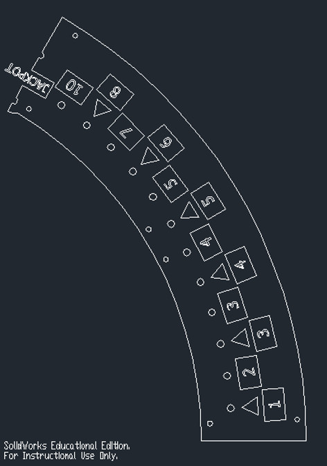
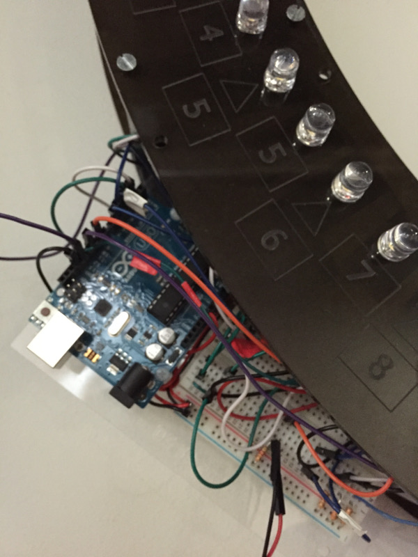

Vortex - Remake of Classic Arcade Game "Cyclone"
Arduino | Arduino IDE | Solidworks | Epilog Laser Cutter
Completed as part of ES 50 (Introduction to Electrical Engineering) at Harvard, Fall 2014
As a final project for ES 50 at Harvard University, I set out to remake the classic Chuck E. Cheese game "Cyclone" using the Arduino platform. The project had two major components - the mechanical design of the laser-cut board structure and the electronics that would power it. The board for the project was a ring with 11 inch inner radius and 14 inch outer radius. The material was 3/8" acrylic in a smoke grey color. The laser cutter used for this project only had a 12"x24" bed, so it was necessary to split the ring into six separate segments, (one of which is shown in the image).
Different "top" and "bottom" sections to the ring were constructed and then connected using standoffs. The top section contained the etchings of the numbers and holes for the LEDs while the bottom section just contained plain ring segments. The top and bottom sections of the ring were placed together with an offset of half of a ring segment which allowed the connecting standoffs to hold the whole assembly together.
The project included 75 different LEDs that had to be controlled separately from a single Arduino. There were three "jackpot" LEDs and three sets of 24 LEDs in-between the jackpots. The LEDs used were large 10mm LEDs with a 330 ohm resistor for each LED. Multiple 74HC595 shift registers were chained together in order to allow control of 24 LEDs in the "in-between" sections. The three jackpot LEDs were controlled directly from pins on the Arduino because it allowed the design to be much simpler.

The project included 75 different LEDs that had to be controlled separately from a single Arduino. There were three "jackpot" LEDs and three sets of 24 LEDs in-between the jackpots. The LEDs used were large 10mm LEDs with a 330 ohm resistor for each LED. Multiple 74HC595 shift registers were chained together in order to allow control of 24 LEDs in the "in-between" sections. The three jackpot LEDs were controlled directly from pins on the Arduino because it allowed the design to be much simpler.
The Arduino code would light up each "in-between" LED for 18ms and light up each jackpot LED for 2ms. In addition, the "in-between" LED right before the jackpot light had a random number generator associated with it that would vary the "on" time between 10ms and 25ms. Hitting the jackpot would trigger a victory sequence in which multiple LEDs light up in celebration.